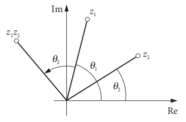
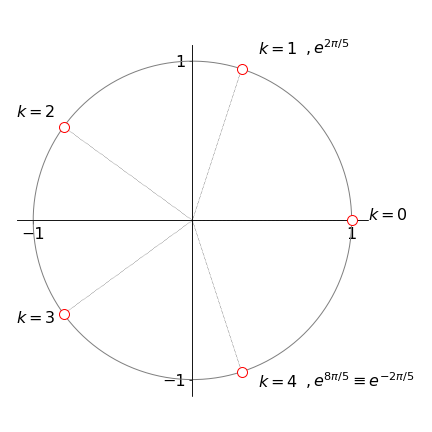
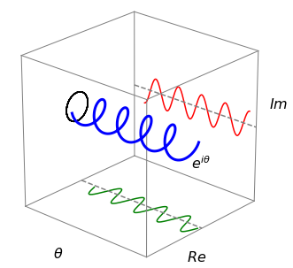
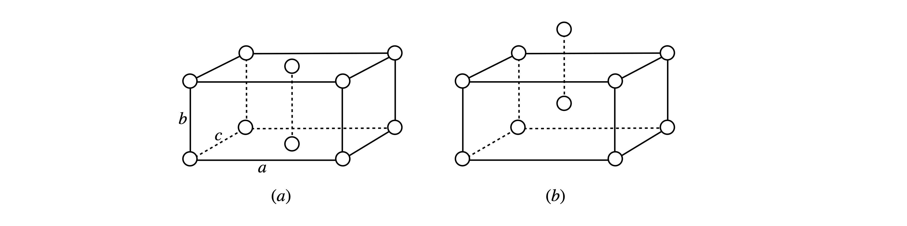

3 De Moivre’s theorem and integer powers of complex numbers
Contents
3 De Moivre’s theorem and integer powers of complex numbers#
3 Complex number as \(z = r\left(\cos(\theta) + i \sin(\theta)\right)\)#
A complex number \(z=a+ib\) can be written equivalently as
and if \(n\) is an integer, what is \(z^n = r^n\left(\cos(\theta) + i \sin(\theta)\right)^n\) ?
The trigonometric part can be shown to have the simple form,
therefore
which is called De Moivre’s theorem and is essential to calculating powers of complex numbers. One of the unexpected things that can be done is to find the \(n^\mathrm{th}\) root of \(1,\, i, \,-3\) or any other number for that matter.
To demonstrate that De Moivre’s theorem is correct, calculate the product of two complex numbers expressed in angular form, and then let \(\theta_1 = \theta_2\). Suppose, for simplicity, that \(r_1 = r_2 = 1\), then the product of two numbers is
The double angle formula (Chapter 1.5.1) was used in the last step, and letting \(\theta_1 = \theta_2\) produces
as predicted by De Moivre’s theorem. This result can be generalized to any power of a real or complex value \(n\).
The product \(z_1z_2\) and quotient \(z_1/z_2\) of two complex numbers are written in this form as
where the angles add, and provided that \(z_2 \ne 0\),
where the angles subtract.
There is a geometrical interpretation to multiplying two complex numbers. If their moduli are unity, \(z_1 = \cos(\theta_1) + i \sin(\theta_1)\) and \(z_2 = \cos(\theta_2) + i \sin(\theta_2)\), then multiplication results in rotation about the origin, equation (10). Geometrically this is shown in figure 5.

Figure 5. Geometrical interpretation of the multiplication of two complex numbers.
3.1 Hyperbolic functions and complex numbers#
In the case of hyperbolic functions there are related formulae since \(\displaystyle \cosh(x) + \sinh(x) = e^x\) then
and for a complex number \(z=x+iy\)
3.2 Roots of a complex number#
Suppose that \(w\) is a real or complex number whose roots we need to find, then mathematicians have shown that, in general, the answer will be a complex number. If the \(n\) roots of a number \(z\) are expressed as \(w = z^{1/n}\), then the equation to examine is \(w^n = z\).
We will let both sides of this equation be different complex numbers. Expressing the left-hand side in angular form using De Moivre’s theorem with a polar angle \(\varphi\) gives
The right-hand side of the equation is
since any complex number can be written in this way. Therefore, \(R^n = r\) where both \(R\) and \(r\) are real numbers. The angles \(\varphi\) and \(\theta\) are related in the most general way as
where \(k = 0,\, 1,\, 2, \cdots n - 1\) because sine and cosine are cyclic functions; \(\sin(\theta) = \sin(\theta + 2\pi) = \sin(\theta + 4\pi)\) and so forth, therefore there will be more than one root to the equation. Using \(n\varphi = \theta\) only allows one root to be found. Using equations 11 and 13, gives
In the special case of calculating the \(n^\mathrm{th}\) root of unity, \(w^n = 1\) and \(z = 1\), then from equation 12, \(r = 1,\; \theta = 0\) and therefore,
There is always one real root and the other roots fall on the vertices of a polygon which is formed inside a circle of unit radius and touches the circle only at its vertices.
To illustrate the method, \(w^5 = 1\) is solved to find the five, fifth roots of unity. The equation to use is \(w^n = z\) with \(n = 5\) and \(z = 1\). The roots are the solution of equation 15 with \(n = 5\),
where \(k = 0, \,1, \,2, \,3, \,4\). The principal value of the equation is the one solved with \(k = 0\). The five roots are then
and as \(\sin(2\pi /5) = -\sin(8\pi /5)\) and so forth, only the positive terms need be used. Only one of the roots is not a complex number and as this first root lies on the real axis, the angle to the next root is
and the other roots are separated from each other by the same angle as expected for a pentagon, see figure 6.

Figure 6. The five roots of the equation \(z^5 = 1\) form a pentagon. The radial lines to each root are \(72^\text{o}\) apart.
3.3 Euler’s theorem, roots of unity, x-ray diffraction structure factor.#
The exponential series is \(\displaystyle e^x = 1 + x + \frac{x^2}{2!} + \frac{x^3}{3!} + \cdots\), and similarly a series can be formed in the complex number \(w\),
Now suppose that \(w = i\theta\), where \(\theta\) is real, then rearrange into real and imaginary terms;
The real and imaginary parts are expansions of the cosine and sine functions respectively, therefore, if \(z\) is a complex number
Figure 4 shows the relationship in diagrammatic form. This equation was discovered in 1748 by the Swiss mathematician Euler, and is extremely important as it crops up everywhere from quantum mechanics to X-ray diffraction in crystals and other phenomena connected with waves.
Changing \(\theta \to -\theta\) produces
because \(\sin(-\theta)=-\sin(\theta)\) and \(\cos(-\theta)=\cos(\theta)\) and therefore, for a general complex number with (modulus) \(r\) as a real number,
De Moivre’s theorem can be derived from these equations: the power of a complex number \(w\) is
Adding and subtracting \(\displaystyle e^{\pm i\theta}\) gives
Calculating \(\displaystyle e^{i\theta}\) with \(\theta = \pi\) and \(r = 1\) produces
which some consider the most beautiful equation in mathematics, as it connects the most important numbers of mathematics \((0, 1, i, e\), and \(\pi)\) and uses the most important operations (multiplication, exponentiation, negation, and addition). Furthermore, an integer is produced by raising an irrational number \(\pi\) times the imaginary unit \(i\) to the power of another irrational number, \(e\). It is not at all obvious why this connection exists from an arithmetical standpoint, but from a geometrical one it is clearer. Consider a circle of unit radius on an Argand diagram; as the angle \(\theta\) increases from \(0 \to 2\pi\), the modulus (radius) is \(1\) when \(\theta = 0\), and is \(i\) when \(\theta = \pi/2\), and \(-1\) when the angle is \(\pi\) and so on; see figure 4.
4.1 Roots of unity - continued#
The \(n\) complex roots of unity are also easily calculated by defining
and the roots are obtained by raising this to integer powers \((w_n^j\equiv (w_n)^j)\)
for example if \(n = 4\) then \(w_4^0 = e^{2\pi i 0/4},\; w_4^1= e^{2\pi i/4},\; w_4^2 = e^{2\pi i 2/4},\;w_4^3=e^{2\pi i3/4}\) and evaluating gives
With the definition of eqn 20, \((w_n)^n\equiv w_n^n=e^{2\pi i}=1 =w_n^0\). if we add \(n\) to any of the roots for example \(w_n^{j+n}\) then \(w_n^{j+n}=w_n^nw_n^j=w_n^j\) which shows that the roots are cyclic \(j\) being an integer and have a period of \(n\).
Sum and product of the roots of unity#
Figure 5 shows the five roots of unity. The sum of these roots, provide there are two or more, is zero, which can be intuitively seen by looking at the image. A geometric argument is that each root can be considered as a vector based at \((0,0i)\) and their sum will be zero as each is equally spaced from its neighbour.
The sum is
and we know from the first part of chapter 5 that the sum
making the substitution \(x=e^{2\pi i/n}\) produces
because we know from eqn. 20 that \((w_n)^n=e^{2\pi i}=1\) the sum is zero.
The product is
where the sum of numbers from \(0 \to n-1\) is \(n(n-1)/2\) as first worked out by Gauss when a schoolboy. The product is therefore
As \(e^{-i\pi} = -1\) and the other term is \(\pm 1\) depending on whether \(n\) is odd or even therefore the product is always \( 1\) if \(n\) is even and \(-1\) if odd, i.e \((-1)^n\).
Useful relationships#
4.2 Examples#
Euler’s formula is important in science, because it permits the description of a sinusoidally varying real quantity by means of complex exponentials as in Fourier Transforms described in Chapter 9. This change simplifies equations, because it is far easier to manipulate exponentials than trig functions. For example, the general form of a sinusoidally varying quantity, such as a plane wave, is \(f (t) = a_0\cos(\omega t - \theta)\), where \(a_0\) is the amplitude, \(\omega\) the frequency, and \(\theta\) the phase. These are all constants, and \(t\) is time and is a real variable. The equivalent complex function is
therefore \(f(t) = Re(g(t))\). Very often in chemistry and physics, the complex form is used without explicitly stating that it is only the real part that represents the waveform. Figure 7 compares these waveforms.
As an example of using Euler’s equation, we will evaluate \(w = \ln(-1)\) even though it doesn’t exist as a pure real number, then calculate \(w = \ln(i)\) and \(w = \ln(z/3)\), where \(z\) is any complex number. The strategy in problems of this type is to convert the number \(-1\), or \(i\), or whatever it is into an exponential form using Euler’s theorem.
(i) In the first example, \(w = \ln(-1)\) or \(e^w = -1\) and \(w\) has to be found to solve this equation. A general complex number can always be written as \(z = re^{i\theta}\), therefore to find \(w\), let \(w = i\theta\). The absolute value (modulus) \(r\) of \(e^w\) is \(e^{i\theta}e^{-i\theta} = 1\). Because \(e^{i\theta} = \cos(\theta) + i \sin(\theta)\), when \(\theta = \pi\), \(e^{i\theta} = -1\) making the principal value of \(\ln(-1) = \ln(1e^{i\pi}) = i\pi\), which, obviously, is a complex number. Note that there are other values of \(\theta\) separated by \(2k\pi i\), where \(k\) is an integer because \(e^{i\theta}\) is a cyclic function.
(ii) Suppose \(w=\ln(i)\) or \(e^w =i\). Let \(w=i\theta\). As \(e^{i\theta} =\cos(\theta)+i\sin(\theta)\),when \(\theta = \pi/2\) this equation produces \(e^{i\pi/2} = i\) or \(\ln(i) = i\pi/2\).
(iii) If \(w = \ln(z/3)\), then \(3e^w = z\), and if \(z\) is any complex number then we look for a value of \(\theta\) such that \(3e^{i\theta} = z\). Generally a complex number is represented by \(z = re^{i\theta}\), then in this example \(w = \ln(z) = \ln(3e^{i\theta}) = \ln(3) + i(\theta + 2\pi k)\) and \(2\pi k\) is added because the function is cyclic and \(k\) is any integer; recall that the Euler equation can be put into a cosine and sine form, so it is a repetitive function. The principal value occurs when \(k = 0\).
Returning to example (i), \(w = \ln(-1)\), if the \(-1\) is treated as a complex number with an imaginary part that is zero, then the answer can be written down directly as \(w = \ln(-1) = \ln(re^{i\theta}) = \ln(1) + i(\pi + 2\pi k)\) and, since \(r = 1\) and \(\ln(1) = 0\), this gives the same result as in (i) \(\ln(-1) = i\pi\) for the principal value.

Figure 7. Visualizations of the complex number \(e^{i\theta} = \cos(\theta) + i \sin(\theta)\) illustrate that it has a wavelike form.
4.3 x-ray diffraction intensity. The Structure Factor and Phase Problem#
In chapter 9, (Fourier Series and Transforms) and in section 13.6, x-ray diffraction by a single crystal is described. The structure factor \(F\) described how the intensity of a given ‘reflection’ is related to the coordinates of the atoms in the unit cell via the Miller indices \(( h k l )\) of the planes of atoms. The Miller indices are integers that can be positive, zero or negative. The planes of atoms occur because the unit cell is repeated throughout the crystal to form a lattice of points. The unit cell is the smallest arrangement of atoms from which the whole crystal can be constructed.
The fractional position of an atom is \(u,v,w\) making the scattering factor,
where subscript \(i\) refers to atoms \(i\) in the unit cell. The values \(u, v, w\) are the atom positions as fractions of the sides of the unit cell. The structure factor can also be put into a sine/cosine form
but it is often easier to use as eqn 21.
The phase problem#
The intensity of the diffracted spot is \(I=|F|^2=F^*F\) which means that the series of terms in \(F\) has to be multiplied by its complex conjugate. The term \(f_i\) is the atomic scattering factor for each type of atom relative to that of a single electron. Electrons in an atom that predominantly scatter the x-rays and as \(f_i\) is proportional to the number of electrons, scattering is larger for heavy atoms than light ones. See Chapter 9-13.6 for details. Notice in particular that the structure factor does not depend on the shape or size of the unit cell, but on the fractional positions of the atoms.
The fact that the detector, e.g. CCD or photon counting array, always measures the intensity \(F^*F\) is the reason the phase problem exists which makes interpreting X-ray diffraction data somewhat complicated. To illustrate, if there are only two atoms then eqn. 21 becomes
where we let \(\beta_i=hu_i+kv_i+lw_i\) for clarity. The measured intensity is therefore
and we know \(f_0\) and \(f_1\) as these atomic structure factors can be calculated. However, with one measurement there are two unknowns in the difference term. The \(hkl\) values are known from the positions of the diffracted spots on the detector ( the image has been indexed ), and so a second measurement can be made with different \(k,h,l\), producing say \(\beta_1-\beta_2\), but the atomic positions are the same and this process can be continued producing a set of difference equations which can be solved until the structure is determined, i.e. the \(u_i,v_i,w_i\) are known. In particular cases some simplification is possible as shown next.
Orthorhombic crystals#
In figure 7a (left) is shown a unit cell of an orthorhombic crystal, this means all angles are \(90^\text{o}\) and the sides are of unequal lengths \(a, b, c\). An atom is at each corner and one atom in the base of the cell, (The second (top) atom is the base of the unit above). On the right is a body-centered unit cell.

Figure 7a. (a) Base-centred and (b) body-centred orthorhombic unit cells.
In the base centred unit cell there are only two distinct atoms positions located at positions \(0, 0, 0\) and at \(1/2, 1/2, 0\) and together with their the axes \(a,b,c\) will produce the crystal structure. We shall consider that the atoms are of the same kind and so the atomic scattering factor is the same.
The series for \(F\) has two terms which are
Although we can form the complex conjugate and calculate
in this case it is not necessary because \(h, k, l\) are integers and we know that \(e^{n i\pi}=e^{-n i\pi}=(-1)^2\). Thus when \(h+k\) is an even number \(F=2f\) and when it is not \(F=0\). The value of \(l\) has no effect thus refections from indices, for example, \(131, 132, 133\) etc. all have the same intensity, and similarly \(122,123,124\) etc. are all missing with zero structure factor.
The direct calculation is
and when \(k+k\) is an odd number \(\cos(\pi(h+k))=-1\) making \(F=0\) and when \(h+k\) is even the intensity is \(4f^2\). Because the detected intensity is \(4f^2\) heavy atoms, with more electrons have far ‘brighter’ spots that do H atoms, meaning that it is far more difficult to detect the latter.
(v) NaCl structure factor. The NaCl crystal has a cubic structure with \(4\) Na and \(4\)Cl in the unit cell. The coordinates (as fractions of the unit cell sides) are
and then the structure factor is the sum
The intensity \(F^*F\) will contain \(16\) terms and we could go ahead and calculate all the exponentials which because \(h,k,l\) are integers will be \(\pm 1\). This suggest that some simplification is possible and this is true for the chlorine terms where \(e^{i\pi(h+k+l)}\) can be factored out giving
and using \(e^{ni\pi}=e^{-ni\pi}\) gives, after rearranging
which will be zero if any two of the exponentials \(e^{i\pi(h+k)}, e^{i\pi(h+l)}, e^{i\pi(k+l)}\) is negative. This will be the case if any two of \( h, k, l \) is an odd number and the other even or vice versa, i.e. the integers are mixed odd and even.
In the case that each \(h, k, l\) is even or each odd then \(1+e^{i\pi(h+k)}+e^{i\pi(h+l)}+e^{i\pi(k+l)}=4 \) and then \(F_{even}=4(f_{Na}+f_{Cl})\) and if odd \(F_{odd}=4(f_{Na}-f_{Cl})\) and the intensity is then the square of these values. Notice that the ‘odd’ intensity may be quite small as it depends on the difference in atomic structure factors which is small if the atoms are close in atomic number and, of course, zero for the same type of atoms.